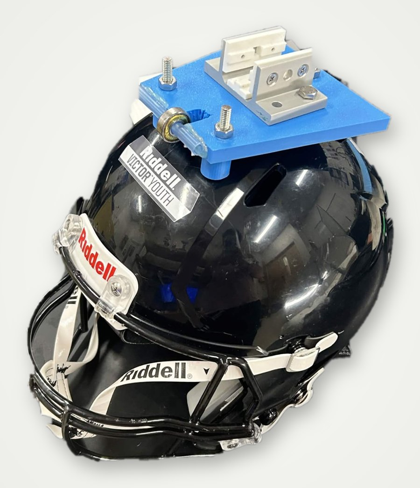
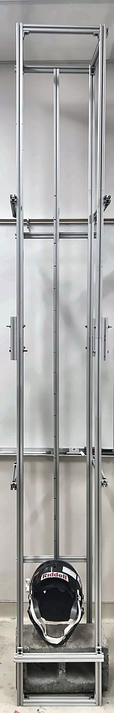
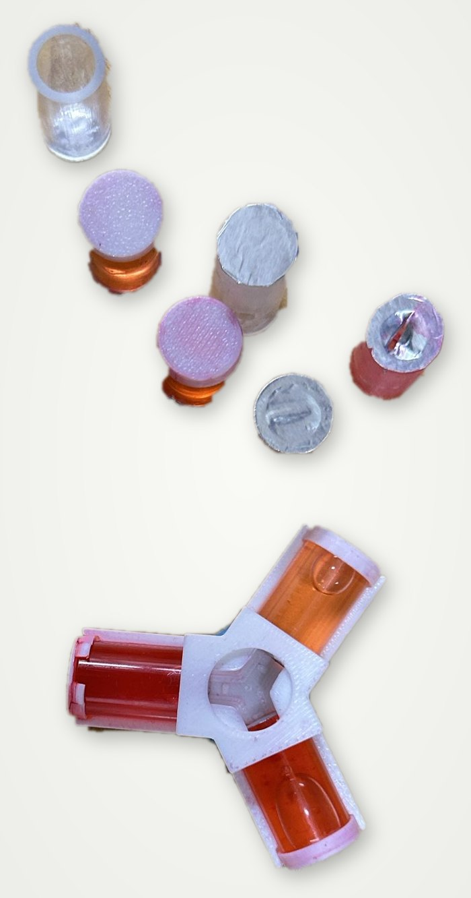

Inertial fluidic acceleration sensors for traumatic brain injury
Undergraduate research, University of North Florida. Supervised by Dr. Christopher Oshman, Ph.D., P.E. Supported by the UNF Office of Undergraduate Research.
Why it matters
Traumatic brain injuries (TBIs) hospitalize hundreds of thousands of people each year, many of them athletes. A brain injury is hard to identify without a medical evaluation, so a quick visual sign of a potentially injurious impact would make athletes safer. Commercial helmet impact sensors exist, but their cost and complexity keep most teams from using them. This project develops a low-cost fluidic sensor instead, and builds the apparatus to test it.
The sensor
The inertial fluidic acceleration sensor (IFAS) is a miniature acrylic tube, 22 to 25 mm long, sealed with a 0.012 mm aluminum membrane and filled with dyed water. An impact of enough force drives the fluid into the membrane and ruptures it, giving a visible sign of a potential TBI. The design target is 100 g. In testing, the sensors were stuck to the left, back, and front of a football helmet with Blu-Tack.
The test apparatus
Drop tower. Built from 80/20 aluminum T-slot framing joined with corner brackets, with cut and drilled sections connecting the upper and lower halves. The first trials showed it wasn’t rigid enough, so I added a cinderblock at the base for mass and impact absorption and extra framing to stiffen the main pillars. A central frame member is the guide track for the helmet.
Test helmet. A 3-D printed plate is bolted to the top of a football helmet, with a slider that fits the T-slot track. Friction made the slider bind and hold the helmet mid-fall, so I cut a slot for a bearing that rolls along the track, keeps the slider aligned, and lets the helmet fall freely.



Results
The helmet was dropped from 30 to 170 cm. No sensor ruptured between 30 and 150 cm, apart from one rupture at 120 cm on a membrane that had already taken twelve impacts, which I treated as an anomaly. Sensors ruptured at 160 cm (1 of 3 trials) and 170 cm (2 of 4 trials), which puts the threshold at about 160 cm.
| Fall height (cm) | 30 | 40 | 50 | 60 | 70 | 80 | 90 | 100 | 120 | 130 | 140 | 150 | 160 | 170 |
|---|---|---|---|---|---|---|---|---|---|---|---|---|---|---|
| Trials | 3 | 3 | 2 | 2 | 3 | 2 | 2 | 1 | 3 | 2 | 1 | 1 | 3 | 4 |
| Ruptures | 0 | 0 | 0 | 0 | 0 | 0 | 0 | 0 | 1 | 0 | 0 | 0 | 1 | 2 |
What’s next
The drop apparatus gives repeatable conditions for future IFAS testing. Its data will guide prototype refinement and, eventually, a commercial product.